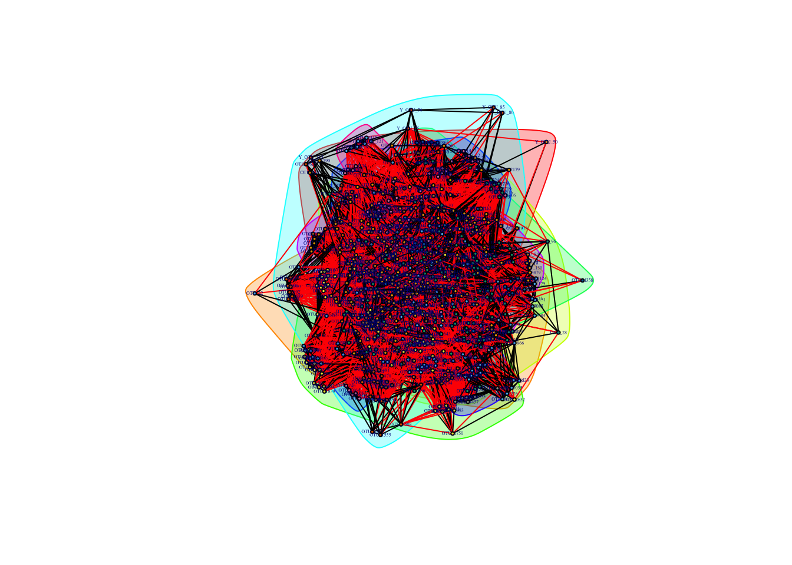
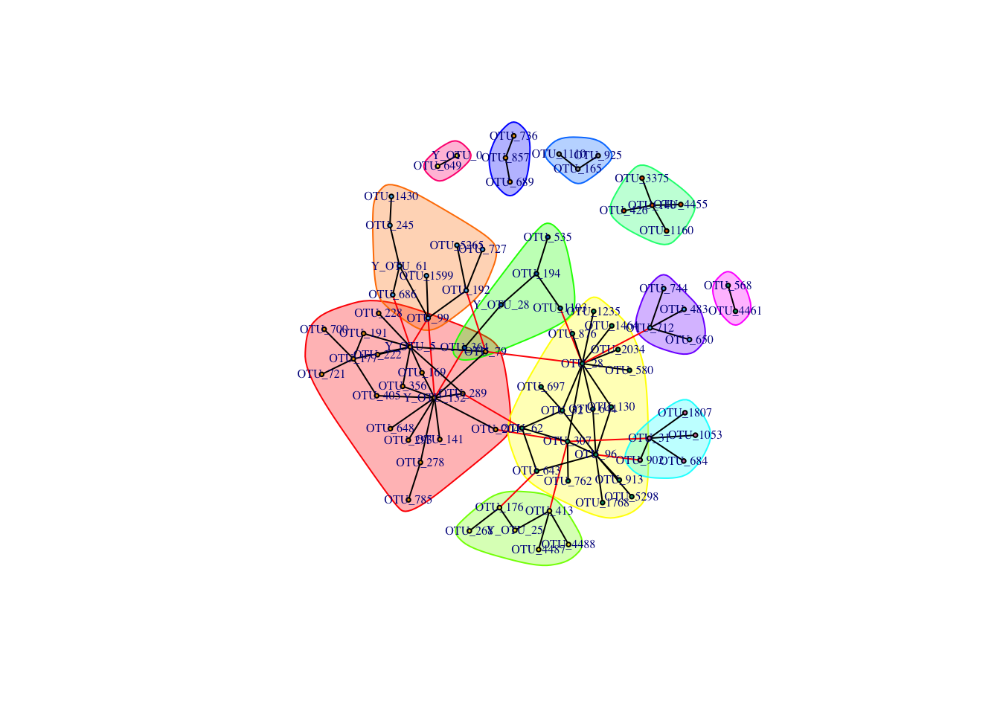
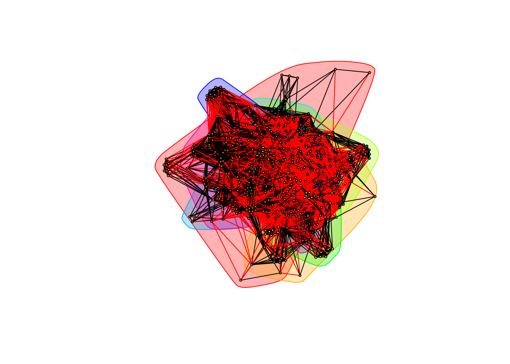
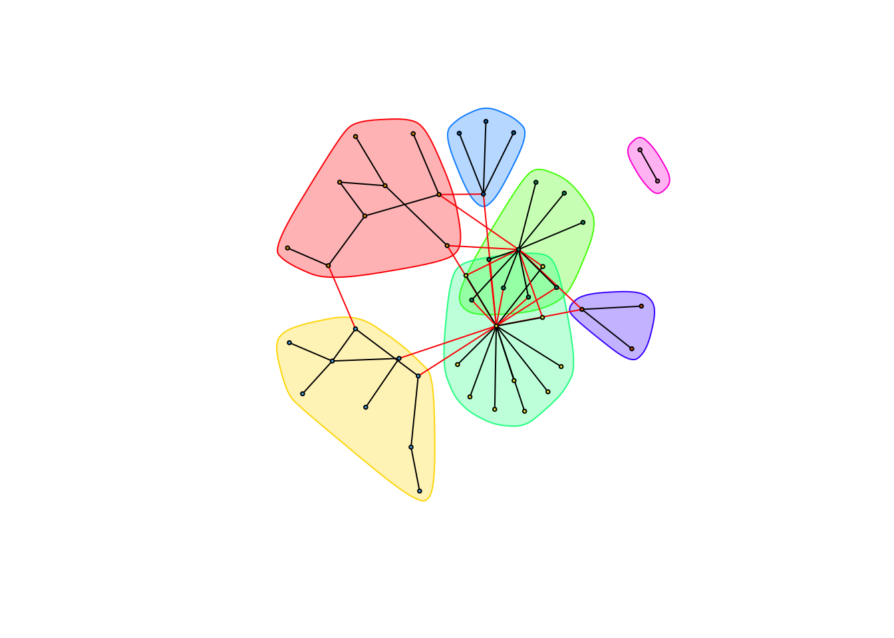
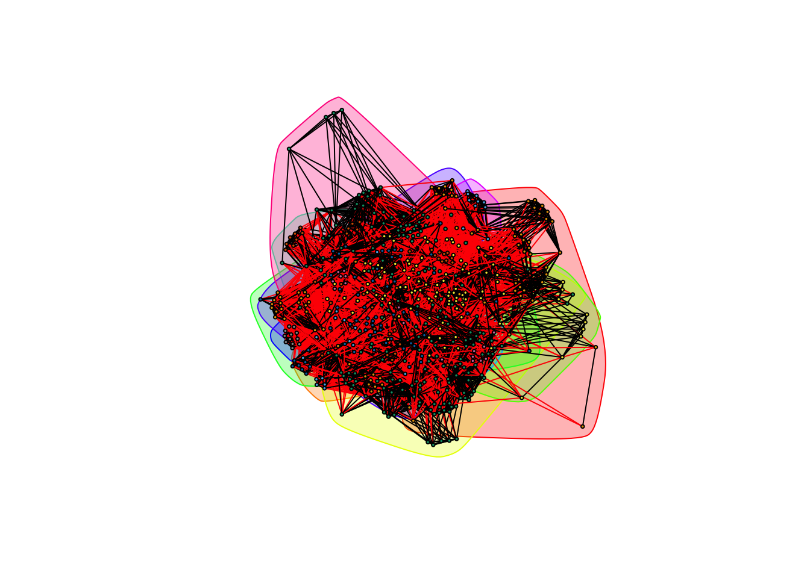
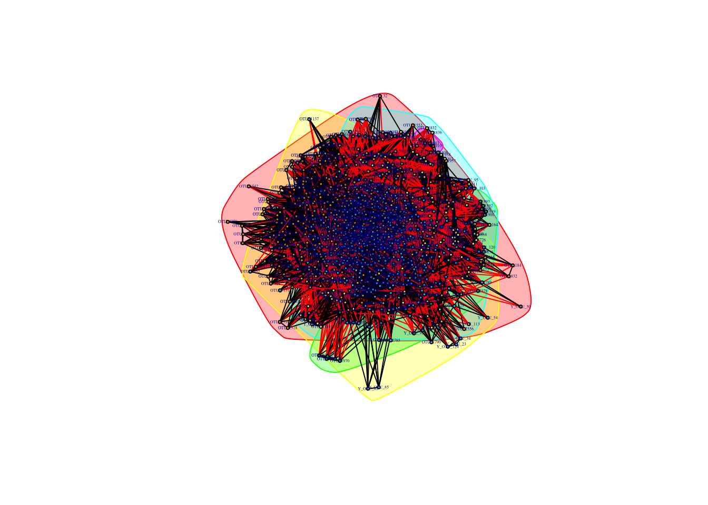
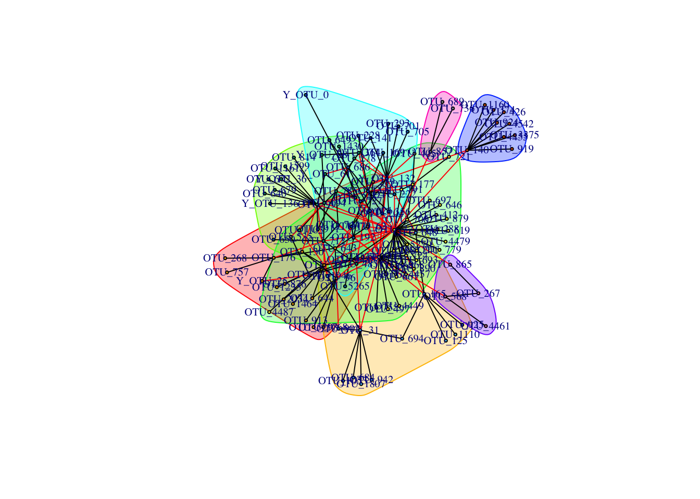

Bacteria and yeast
library(data.table, warn.conflicts = FALSE)
library(igraph, warn.conflicts = FALSE)taxa is the look-up table for the bacterial and yeast OTUs. As before, we remove any cyanobacteria and chloropast observations.
taxa <- data.table(read.delim("./data/bacteria-yeast/bacteria_yeast_classified_otus"))
taxa <- taxa[, -1]
colnames(taxa)<-c("OTU",colnames(taxa[,-1]))
nrow(taxa)## [1] 5521remove <- taxa[which(taxa[[4]] %in% c("Cyanobacteria","Chloroplast")),]$OTU
taxa <- taxa[-c(remove),]
nrow(taxa)## [1] 5128#5128cooccurrence_data contains coccurrence data for bacteria and yeast. The bacteria-bacteria interactions should still be the same as in the bacteria only analysis. Again, we remove any chloroplast or cyanabacteria relation data (operations done in this order for running time concerns).
cooccurrence_data <- data.table(read.table("./data/bacteria-yeast/bacteria_yeast_cooccurrence",
col.names = c("treatment", "OTU_1", "OTU_2", "rho", "p")))
cooccurrence_data <- cooccurrence_data[p <= 0.05, -5]
nrow(cooccurrence_data)## [1] 35727# 557643
complete_data <- cooccurrence_data[-c(which(apply(cooccurrence_data, 1, function(x) any(remove %in% x)))),]
nrow(complete_data)## [1] 33158# 516426Separating out yeast data
yeast_otus <- taxa[which(startsWith(as.character(taxa[[1]]), "Y")), ]$OTU
bacteria_only_data <- cooccurrence_data[-c(which(apply(cooccurrence_data, 1, function(x) any(yeast_otus %in% x)))),]
nrow(bacteria_only_data)## [1] 32169# 474703Complete Data
First separate the data set into positive and negative networks:
by_complete_positive_weights <- complete_data[complete_data[['rho']] > 0]
head(by_complete_positive_weights)## treatment OTU_1 OTU_2 rho
## 1: Bagged Y_OTU_0 Y_OTU_116 0.367480
## 2: Bagged Y_OTU_0 Y_OTU_122 0.411578
## 3: Bagged Y_OTU_0 Y_OTU_132 0.548760
## 4: Bagged Y_OTU_0 Y_OTU_136 0.461710
## 5: Bagged Y_OTU_0 Y_OTU_140 0.396878
## 6: Bagged Y_OTU_0 Y_OTU_145 0.426277nrow(by_complete_positive_weights)## [1] 32938by_complete_negative_weights <- complete_data[complete_data[['rho']] < 0]
head(by_complete_negative_weights)## treatment OTU_1 OTU_2 rho
## 1: Bagged Y_OTU_132 OTU_705 -0.285294
## 2: Bagged Y_OTU_132 OTU_79 -0.283787
## 3: Bagged Y_OTU_136 OTU_99 -0.301448
## 4: Bagged Y_OTU_36 OTU_99 -0.395957
## 5: Bagged Y_OTU_5 OTU_204 -0.263784
## 6: Bagged Y_OTU_5 OTU_364 -0.258673nrow(by_complete_negative_weights)## [1] 220Exposed Communities
Positive Weights
by_complete_exposed_positive <- by_complete_positive_weights[treatment == "Exposed"]
by_complete_exposed_positive <- by_complete_exposed_positive[, -1]
gr_by_complete_exposed_positive <- graph.data.frame(by_complete_exposed_positive, directed = FALSE)
by_complete_exposed_positive_communities <- cluster_fast_greedy(gr_by_complete_exposed_positive,
weights = E(gr_by_complete_exposed_positive)$rho)
plot(by_complete_exposed_positive_communities, gr_by_complete_exposed_positive,
layout = layout.fruchterman.reingold(gr_by_complete_exposed_positive),
rescaled = TRUE,
vertex.size = 2,
vertex.label.cex = 0.25
)
Negative Weights
by_complete_exposed_negative <- by_complete_negative_weights[treatment == "Exposed"]
by_complete_exposed_negative <- by_complete_exposed_negative[, -1]
by_complete_exposed_negative[[3]] <- abs(by_complete_exposed_negative[[3]])
gr_by_complete_exposed_negative <- graph.data.frame(by_complete_exposed_negative, directed = FALSE)
by_complete_exposed_negative_communities <- cluster_fast_greedy(gr_by_complete_exposed_negative,
weights = E(gr_by_complete_exposed_negative)$rho)
plot(by_complete_exposed_negative_communities, gr_by_complete_exposed_negative,
layout = layout.fruchterman.reingold(gr_by_complete_exposed_negative),
rescaled = TRUE,
vertex.size = 2,
vertex.label.cex = 0.50
)
Caged Communities
Positive Weights
by_complete_caged_positive <- by_complete_positive_weights[treatment == "Caged"]
by_complete_caged_positive <- by_complete_caged_positive[, -1]
gr_by_complete_caged_positive <- graph.data.frame(by_complete_caged_positive, directed = FALSE)
by_complete_caged_positive_communities <- cluster_fast_greedy(gr_by_complete_caged_positive,
weights = E(gr_by_complete_caged_positive)$rho)
plot(by_complete_caged_positive_communities, gr_by_complete_caged_positive,
layout = layout.fruchterman.reingold(gr_by_complete_caged_positive),
rescaled = TRUE,
vertex.size = 2,
vertex.label.cex = 0.25
)
Negative Weights
by_complete_caged_negative <- by_complete_negative_weights[treatment == "Caged"]
by_complete_caged_negative <- by_complete_caged_negative[, -1]
by_complete_caged_negative[[3]] <- abs(by_complete_caged_negative[[3]])
gr_by_complete_caged_negative <- graph.data.frame(by_complete_caged_negative, directed = FALSE)
by_complete_caged_negative_communities <- cluster_fast_greedy(gr_by_complete_caged_negative,
weights = E(gr_by_complete_caged_negative)$rho)
plot(by_complete_caged_negative_communities, gr_by_complete_caged_negative,
layout = layout.fruchterman.reingold(gr_by_complete_caged_negative),
rescaled = TRUE,
vertex.size = 2,
vertex.label.cex = 0.5
)
Bagged Communities
Positive Weights
by_complete_bagged_positive <- by_complete_positive_weights[treatment == "Bagged"]
by_complete_bagged_positive <- by_complete_bagged_positive[, -1]
gr_by_complete_bagged_positive <- graph.data.frame(by_complete_bagged_positive, directed = FALSE)
by_complete_bagged_positive_communities <- cluster_fast_greedy(gr_by_complete_bagged_positive,
weights = E(gr_by_complete_bagged_positive)$rho)
plot(by_complete_bagged_positive_communities, gr_by_complete_bagged_positive,
layout = layout.fruchterman.reingold(gr_by_complete_bagged_positive),
rescaled = TRUE,
vertex.size = 2,
vertex.label.cex = 0.25
)
Negative Weights
by_complete_bagged_negative <- by_complete_negative_weights[treatment == "Bagged"]
by_complete_bagged_negative <- by_complete_bagged_negative[, -1]
by_complete_bagged_negative[[3]] <- abs(by_complete_bagged_negative[[3]])
gr_by_complete_bagged_negative <- graph.data.frame(by_complete_bagged_negative, directed = FALSE)
by_complete_bagged_negative_communities <- cluster_fast_greedy(gr_by_complete_bagged_negative,
weights = E(gr_by_complete_bagged_negative)$rho)
plot(by_complete_bagged_negative_communities, gr_by_complete_bagged_negative,
layout = layout.fruchterman.reingold(gr_by_complete_bagged_negative),
rescaled = TRUE,
vertex.size = 2,
vertex.label.cex = 0.5
)
The OTUs with the highest degree in the largest community are OTU_307 and OTU_32:
degree(gr_by_complete_bagged_negative, communities(by_complete_bagged_negative_communities)[[1]])## OTU_177 OTU_188 OTU_191 OTU_222 OTU_245 OTU_307 OTU_32 OTU_356
## 1 2 1 1 2 14 25 1
## OTU_4449 OTU_4488 OTU_5270 OTU_580 OTU_668 OTU_693 OTU_724 OTU_727
## 1 2 2 2 2 2 2 2
## OTU_890 OTU_412 OTU_4479 OTU_62 OTU_648 OTU_762 OTU_779 OTU_857
## 2 1 1 1 1 1 1 1These OTUs are:
taxa[OTU %in% c("OTU_307", "OTU_32")]## OTU domain phylum class
## 1: OTU_32 Bacteria unclassified_Bacteria unclassified_Bacteria
## 2: OTU_307 Bacteria unclassified_Bacteria unclassified_Bacteria
## order family genus
## 1: unclassified_Bacteria unclassified_Bacteria unclassified_Bacteria
## 2: unclassified_Bacteria unclassified_Bacteria unclassified_BacteriaThe other OTUs in that community are:
taxa[OTU %in% communities(by_complete_bagged_negative_communities)[[1]]]## OTU domain phylum class
## 1: OTU_4449 Bacteria Firmicutes Bacilli
## 2: OTU_648 Bacteria Bacteroidetes Flavobacteriia
## 3: OTU_668 Bacteria Actinobacteria Actinobacteria
## 4: OTU_693 Bacteria Proteobacteria Gammaproteobacteria
## 5: OTU_5270 unclassified_Root unclassified_Root unclassified_Root
## 6: OTU_724 Bacteria Actinobacteria Actinobacteria
## 7: OTU_779 Bacteria Bacteroidetes Bacteroidia
## 8: OTU_727 Bacteria Proteobacteria Gammaproteobacteria
## 9: OTU_177 Bacteria Proteobacteria Betaproteobacteria
## 10: OTU_762 Bacteria Proteobacteria Betaproteobacteria
## 11: OTU_857 Bacteria Bacteroidetes Flavobacteriia
## 12: OTU_890 Bacteria Bacteroidetes Sphingobacteriia
## 13: OTU_191 Bacteria Proteobacteria Gammaproteobacteria
## 14: OTU_188 Bacteria Actinobacteria Actinobacteria
## 15: OTU_4479 Bacteria Firmicutes Bacilli
## 16: OTU_4488 Bacteria Firmicutes Bacilli
## 17: OTU_222 Bacteria Actinobacteria Actinobacteria
## 18: OTU_245 Bacteria Proteobacteria Gammaproteobacteria
## 19: OTU_32 Bacteria unclassified_Bacteria unclassified_Bacteria
## 20: OTU_307 Bacteria unclassified_Bacteria unclassified_Bacteria
## 21: OTU_356 Bacteria Bacteroidetes Flavobacteriia
## 22: OTU_62 Bacteria Proteobacteria Gammaproteobacteria
## 23: OTU_412 Bacteria Proteobacteria Alphaproteobacteria
## 24: OTU_580 Bacteria Proteobacteria Betaproteobacteria
## OTU domain phylum class
## order family
## 1: Bacillales Paenibacillaceae 1
## 2: Flavobacteriales Flavobacteriaceae
## 3: Actinomycetales Micrococcaceae
## 4: Aeromonadales Aeromonadaceae
## 5: unclassified_Root unclassified_Root
## 6: Actinomycetales Propionibacteriaceae
## 7: Bacteroidales Prevotellaceae
## 8: Pseudomonadales Moraxellaceae
## 9: Burkholderiales Oxalobacteraceae
## 10: Burkholderiales Comamonadaceae
## 11: Flavobacteriales Flavobacteriaceae
## 12: Sphingobacteriales Sphingobacteriaceae
## 13: Pseudomonadales Moraxellaceae
## 14: Actinomycetales Micrococcaceae
## 15: Bacillales Paenibacillaceae 1
## 16: Lactobacillales Streptococcaceae
## 17: Actinomycetales Nocardioidaceae
## 18: Pseudomonadales Moraxellaceae
## 19: unclassified_Bacteria unclassified_Bacteria
## 20: unclassified_Bacteria unclassified_Bacteria
## 21: Flavobacteriales Flavobacteriaceae
## 22: Pseudomonadales Moraxellaceae
## 23: Rhodobacterales Rhodobacteraceae
## 24: Burkholderiales unclassified_Burkholderiales
## order family
## genus
## 1: Paenibacillus
## 2: Chryseobacterium
## 3: Kocuria
## 4: unclassified_Aeromonadaceae
## 5: unclassified_Root
## 6: Propionibacterium
## 7: Prevotella
## 8: unclassified_Moraxellaceae
## 9: Rugamonas
## 10: unclassified_Comamonadaceae
## 11: Soonwooa
## 12: Sphingobacterium
## 13: Enhydrobacter
## 14: Rothia
## 15: Saccharibacillus
## 16: Streptococcus
## 17: Nocardioides
## 18: Acinetobacter
## 19: unclassified_Bacteria
## 20: unclassified_Bacteria
## 21: Cloacibacterium
## 22: Acinetobacter
## 23: unclassified_Rhodobacteraceae
## 24: unclassified_Burkholderiales
## genusAll Communities
Positive Weights
by_complete_all_positive <- by_complete_positive_weights[, -1]
gr_by_complete_all_positive <- graph.data.frame(by_complete_all_positive, directed = FALSE)
gr_by_complete_all_positive <- simplify(gr_by_complete_all_positive,
edge.attr.comb = list(weight = "mean"))
by_complete_all_positive_communities <- cluster_fast_greedy(gr_by_complete_all_positive,
weights = E(gr_by_complete_all_positive)$rho)
plot(by_complete_all_positive_communities, gr_by_complete_all_positive,
layout = layout.fruchterman.reingold(gr_by_complete_all_positive),
rescaled = TRUE,
vertex.size = 2,
vertex.label.cex = 0.25
)
Negative Weights
by_complete_all_negative <- by_complete_negative_weights[, -1]
by_complete_all_negative[[3]] <- abs(by_complete_all_negative[[3]])
gr_by_complete_all_negative <- graph.data.frame(by_complete_all_negative, directed = FALSE)
gr_by_complete_all_negative <- simplify(gr_by_complete_all_negative,
edge.attr.comb=list(weight = "mean"))
by_complete_all_negative_communities <- cluster_fast_greedy(gr_by_complete_all_negative,
weights = E(gr_by_complete_all_negative)$rho)
plot(by_complete_all_negative_communities, gr_by_complete_all_negative,
layout = layout.fruchterman.reingold(gr_by_complete_all_negative),
rescaled = TRUE,
vertex.size = 2,
vertex.label.cex = 0.65
)